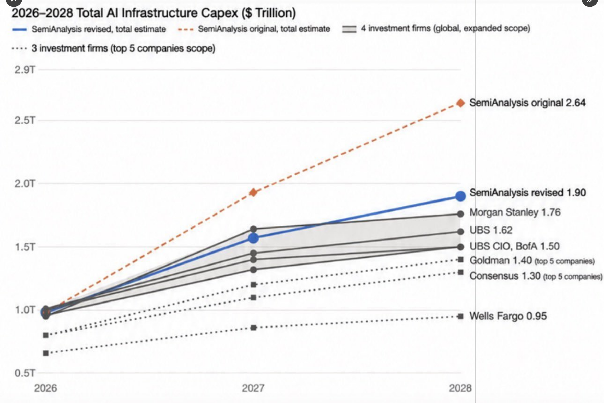

Surinvestissement dans l'IA : le secteur s'ajuste-t-il à temps ?
Est-ce qu'on surinvestit dans l'IA ? Selon les prévisions de SemiAnalysis d'avant novembre 2026, environ 50 GW de capacité IA vont s'ajouter en 2027 aux quelque 42 GW construits depuis 2025, soit environ 92 GW fin 2027 hors Chine [1]. La question n'est pas de savoir si ce plan est trop ambitieux (il l'est), mais si le secteur s'en rend compte à temps et l'adapte à ce qu'il peut payer. On arrive à quatre conclusions :
- Le plan initial ne tient pas. Même en comptant le calcul que la publicité de Meta et Google paie déjà (celui de leurs publicités et produits gratuits), il manque environ 400 à 600 Md$ en 2027 selon la demande.
- Le secteur a trois façons de s'ajuster. Le crédit, qui compte autant que les revenus (150 Md$ de dette supplémentaire pèsent autant que 150 Md$ de chiffre d'affaires) mais ne fait que gagner du temps ; le report de constructions ; et la marge de Nvidia. Quand l'argent manque, Nvidia gagne plus à vendre moins de puces qu'à baisser ses prix : ce sont donc d'abord ses volumes qui baissent, sauf si AMD, les TPU et Trainium forcent les prix à la baisse ; ses bénéfices baissent dans les deux cas, comme l'anticipe la bourse.
- L'ajustement a commencé. SemiAnalysis a abaissé ses prévisions d'investissements 2027 d'environ 20 % [39], des projets sont suspendus ou repris par des acteurs plus solides, et environ la moitié de la capacité prévue pour 2027 n'est pas encore lancée.
- Le vrai risque est en 2028. Si un crédit facile fait tout construire en 2027 puis se ferme, plus aucun amortisseur ne joue.
1. Le plan : une facture de 920 Md$, dont 420 déjà figés
Construire 1 GW de datacenter IA coûte entre 35 et 60 Md$ selon les estimations, dont environ 35 Md$ de matériel acheté à Nvidia d'après Jensen Huang [20] (c'est le prix payé par les clients, pas ce qu'il coûte à Nvidia de le fabriquer). Ramené à l'année (puces amorties sur 5 ans, bâtiments sur 15 à 20 ans, plus l'électricité et l'exploitation), cela fait environ 10 Md$ par GW et par an : 7 Md$ de puces (35 Md$ ÷ 5 ans) et 3 Md$ pour tout le reste. C'est cohérent avec les prix de location constatés : environ 12 Md$ par GW et par an selon SemiAnalysis [1], environ 13 Md$ dans le contrat entre OpenAI et Oracle (300 Md$ sur cinq ans pour 4,5 GW, à partir de 2027) [33].
Pour 92 GW, la facture 2027 est donc d'environ 920 Md$. Mais 420 Md$ correspondent aux 42 GW déjà construits, avec des puces achetées au prix fort : les contrats sont signés et le matériel payé. Seuls les 50 GW nouveaux peuvent encore s'ajuster, en prix ou en volume.
2. Ce que le secteur peut payer : revenus de l'IA, publicité de Meta et Google, crédit
Trois sources, de taille et de solidité différentes, peuvent régler cette facture.
Les revenus de l'IA : 200 à 400 Md$
Tous les montants de cet essai sont des chiffres d'affaires sur l'année 2027, pas des revenus annualisés (le revenu d'un mois multiplié par 12, plus élevé en fin d'année pour une entreprise en croissance). Et seul compte l'argent des clients finaux : la location de calcul d'un cloud à un labo est déjà payée avec le chiffre d'affaires de ce labo.
Anthropic est à environ 80 Md$ de revenu annualisé (octobre 2026) [6][7], pour 33,2 Md$ de chiffre d'affaires sur les 9 premiers mois de 2026 [2]. Les prévisionnistes attendent environ 115 Md$ de revenu annualisé en mai 2027 [8], et ses banquiers présentent aux investisseurs de l'IPO 190 à 200 Md$ de chiffre d'affaires pour 2028, contre 70 Md$ annoncés par Anthropic elle-même fin 2025 [9]. Sur cette trajectoire, Anthropic ferait environ 120 à 130 Md$ en 2027 (notre estimation). OpenAI prévoit ~30-36 Md$ de chiffre d'affaires en 2026 [10][11] et environ 62 Md$ en 2027 [10], soit un quasi-doublement ; son revenu annualisé dépassait 40 Md$ en août 2026 [?]. Les deux labos feraient donc environ 190 Md$ en 2027 en tenant leurs plans.
Le reste est plus difficile à mesurer. L'activité IA de Microsoft atteignait 37 Md$ de revenu annualisé en avril 2026 (+123 % sur un an) [36], mais une partie revient à louer du calcul à OpenAI. Google ne publie pas de revenus IA, et la croissance de Google Cloud (+103 % au T3 2026) [37] vient en partie de la location aux labos. xAI ne pèse qu'environ 0,5 Md$ de revenu annualisé hors X [38]. D'où trois hypothèses pour 2027 :
- Faibles, ~200 Md$ : la stagnation de la dépense observée chez Ramp se prolonge [23]. Anthropic et OpenAI restent nettement sous leurs plans (~125 Md$ à eux deux), les autres ajoutent ~75 Md$.
- Centraux, ~300 Md$ : Anthropic et OpenAI font ~165 Md$, les autres ~135 Md$.
- Forts, ~400 Md$ : Anthropic et OpenAI tiennent leurs plans (~190 Md$), et les autres doublent à peu près chaque année (~210 Md$).
Le calcul payé par la publicité de Meta et Google : ~100 Md$, quoi qu'il arrive
Une partie des 92 GW ne vend aucun token : elle classe les publicités, recommande des contenus et fait tourner les produits gratuits de Meta et Google. Elle est financée par leurs revenus publicitaires, environ 580 Md$ par an (T3 2026 × 4) [16][18]. Chez Meta, ce calcul est clairement rentable : 63,1 Md$ de revenus publicitaires au T3 2026 (+26 %), avec des impressions en hausse de 10 % mais un prix par publicité en hausse de 14 % [16], signe que les recommandations par IA rendent chaque publicité plus efficace. Chez Google, c'est moins évident : 82 Md$ au T3 2026 (+10,6 %) [18] ; la recherche (63,4 Md$) progresse de 12 %, mais la direction reconnaît que les requêtes AI Mode se monétisent moins bien [19].
Hypothèse : ces usages occupent environ 10 GW, soit ~100 Md$ de la facture, couverts quoi qu'il arrive à la demande de tokens. Soit environ 17 % de leurs revenus publicitaires, un montant supportable. Ces usages consomment déjà beaucoup de calcul, et en consommeront plus : Meta a doublé au T4 2025 le nombre de GPU servant à entraîner GEM, son modèle génératif de classement des publicités [30], étend ses puces maison (MTIA) à l'entraînement de ses modèles de classement et de recommandation [31], et chercherait à rendre ses systèmes de recommandation plus de 10 fois plus complexes [29]. Mais ce n'est pas la majorité du parc : selon SemiAnalysis, l'essentiel de la nouvelle capacité de Meta va à Meta Superintelligence Labs [29], et la hausse de ses investissements (72 Md$ en 2025, 125 à 145 Md$ prévus en 2026) est tirée à la fois par la superintelligence et par le cœur de métier [28][32]. Aucun hyperscaler ne publie cette répartition : 10 GW est un ordre de grandeur, pas une mesure. Une fourchette de 5 à 15 GW (50 à 150 Md$) déplacerait le prix des puces compatible d'environ ±5 Md$ par GW (voir la règle de pouce, partie 3), sans changer les conclusions.
Cette publicité paie le calcul publicitaire, pas les ambitions de « superintelligence » : Meta a dépensé 34,9 Md$ d'investissements au seul T3 (contre 19,4 Md$ un an plus tôt), et son flux de trésorerie libre est devenu négatif (−2,1 Md$) [17].
Le crédit : 100 à 350 Md$ par an, selon les marchés
Le reste doit venir d'investisseurs qui parient sur les revenus de 2028-2030. Côté labos, OpenAI prévoit de consommer environ 57 Md$ de trésorerie en 2027 [10], Anthropic dispose de plus de 95 Md$ avant son introduction en bourse [6], et xAI et les autres ajoutent quelques dizaines de milliards. Côté hyperscalers, l'investissement IA absorberait environ 94 % de leur flux de trésorerie opérationnel en 2026-2027 selon PIMCO [?]. Ils ont déjà émis environ 136 Md$ de dette pour ça [15], et les flux de trésorerie libres d'Alphabet (−9,1 Md$ au T3 2026) et d'Amazon (−42,4 Md$ sur 12 mois glissants) sont déjà négatifs [?]. Ce qu'ils peuvent mettre chaque année dépend de l'humeur des marchés :
- Crédit fermé, ~100 Md$ : les labos vivent sur leur trésorerie, les hyperscalers cessent d'emprunter.
- Crédit normal, ~200 Md$ : le rythme actuel de brûlage des labos, plus une centaine de milliards de dette nouvelle.
- Crédit ouvert, ~350 Md$ : IPO réussie d'Anthropic, émissions obligataires massives, crédit privé abondant pour les datacenters.
En résumé : dans le cas de référence, le calcul publicitaire (~100 Md$) et le crédit normal (~200 Md$) apportent environ 300 Md$ par an en plus des revenus de l'IA, et seul le crédit varie selon les marchés. Avant tout crédit, il manque 920 − 100 − revenus de l'IA, soit 420 à 620 Md$ : c'est l'écart d'environ 400 à 600 Md$ annoncé en introduction. Le plan initial ne tient donc pas ; reste à savoir si le secteur s'en rend compte à temps.
3. Comment le secteur peut s'ajuster : la marge de Nvidia ou le volume ?
Trois leviers peuvent combler l'écart. Le crédit, tant que les investisseurs croient aux revenus de 2028-2030, mais il ne fait que gagner du temps, en alourdissant la facture figée de l'année suivante. Le report de constructions, dans la limite des contrats déjà signés. Et la marge de Nvidia. Les deux derniers peuvent venir d'un choix des acheteurs, qui adaptent leurs plans à leurs revenus, ou leur être imposés quand le crédit se ferme. Reste à savoir lequel, du prix ou du volume, absorbe l'écart.
Si tous les GW sont construits, la marge de Nvidia doit baisser
Nvidia vend aujourd'hui avec environ 75 % de marge brute [12] : sur 35 Md$ de matériel par GW, elle en fabrique pour environ 8,75 Md$. Effet d'une baisse de sa marge sur la facture :
| Marge Nvidia (nouvelles puces) | Prix des puces par GW | Coût annuel par nouveau GW | Facture 2027 totale |
|---|---|---|---|
| 75 % (aujourd'hui) | 35 Md$ | ~10 Md$ | ~920 Md$ |
| 50 % | 17,5 Md$ | ~6,5 Md$ | ~745 Md$ |
| 25 % | 11,7 Md$ | ~5,3 Md$ | ~685 Md$ |
| 0 % (théorique) | 8,75 Md$ | ~4,8 Md$ | ~655 Md$ |
Même à prix coûtant, la facture ne baisserait que d'environ 30 %, parce que 42 GW sont déjà payés : Nvidia est un amortisseur, pas une solution.
Prenons un cas central, détaillé en partie 4 :
- Budget : 300 (revenus de l'IA) + 100 (calcul publicitaire de Meta et Google) + 200 (crédit normal) = 600 Md$.
- Moins le coût figé des 42 GW : 600 − 420 = 180 Md$ pour les 50 GW nouveaux.
- Par nouveau GW : 180 ÷ 50 = 3,6 Md$ par an.
- Moins ce qui n'est pas des puces : 3,6 − 3 = 0,6 Md$ par an pour les puces.
- Prix d'achat (puces amorties sur 5 ans) : 0,6 × 5 = 3 Md$ de puces par GW, contre 35 Md$ aujourd'hui, et moins que les 8,75 Md$ qu'elles coûtent à fabriquer.
- Aucune marge ne permet donc de construire les 50 GW. Même à prix coûtant (~4,75 Md$ par GW et par an), seuls ~38 GW sont finançables ; à la marge actuelle, ~18 GW.
Règle de pouce : chaque 50 Md$ de budget en plus ou en moins déplace de 1 Md$ par an le coût supportable d'un nouveau GW, soit 5 Md$ sur le prix des puces par GW, que l'argent vienne des revenus ou de la dette.
Mais Nvidia a intérêt à vendre moins plutôt que moins cher
Quand le budget ne suffit pas, Nvidia peut baisser ses prix pour vendre plus de GW, ou les garder et en vendre moins. Avec les 180 Md$ du scénario central, sa marge brute dans chaque cas :
| Stratégie de Nvidia | GW vendus | Marge brute par GW | Marge brute totale |
|---|---|---|---|
| Garder le prix (75 %) | 18 | 26,25 Md$ | ~470 Md$ |
| Baisser à 50 % | 28 | 8,75 Md$ | ~240 Md$ |
| Vendre à prix coûtant | 38 | 0 | 0 |
Avec un budget fixé, Nvidia gagne toujours plus en gardant son prix, quelle que soit la taille du budget : comme 3 Md$ par GW ne dépendent pas d'elle, baisser son prix ne libère pas assez de volume pour compenser. Sa marge ne baisse donc que si quelqu'un d'autre construit les GW qu'elle refuse de brader : les TPU de Google, les Trainium d'Amazon, AMD, qui vendent déjà avec des marges plus faibles. Le vrai choix de Nvidia n'est pas « marge ou volume », mais « marge ou part de marché ».
4. Quatre scénarios pour 2027
En croisant les trois niveaux de revenus et les trois régimes de crédit (calcul publicitaire de Meta et Google fixé à 100 Md$), on obtient neuf budgets. Chaque case donne le nombre de GW finançables si Nvidia garde sa marge de 75 %, puis la marge maximale qui permettrait de construire les 50 GW :
| Crédit fermé ~100 Md$/an | Crédit normal ~200 Md$/an | Crédit ouvert ~350 Md$/an | |
|---|---|---|---|
| Revenus faibles ~200 Md$/an | Parc existant non couvert | 8 GW — | 23 GW — |
| Revenus centraux ~300 Md$/an | 8 GW — | 18 GW — | 33 GW (51 %) |
| Revenus forts ~400 Md$/an | 18 GW — | 28 GW (33 %) | 43 GW (69 %) |
Probabilité de la combinaison : probable possible peu probable
La grille se lit en diagonale : un cran de crédit vaut à peu près un cran de revenus. Mais les deux ne sont pas indépendants : les prêteurs financent les revenus attendus, qu'ils extrapolent de la croissance actuelle. Les cases foncées (revenus faibles et crédit ouvert, revenus forts et crédit fermé) sont donc peu probables, sauf choc extérieur. Le seul écart plausible à la diagonale est un crédit en avance sur les revenus, parce qu'il anticipe dans l'euphorie et se retire d'un coup à la déception. Les neuf cases se regroupent en quatre scénarios :
| Scénario | Hypothèses | Nouveaux GW en 2027 | Nvidia | Ce qui absorbe l'écart |
|---|---|---|---|---|
| A. Diffusion | Revenus forts, crédit ouvert | ~43-50 | Marge ~70-75 % | Un léger report ou une légère baisse de marge : pas de surinvestissement. |
| B. Fuite en avant | Revenus centraux, crédit ouvert | ~33-50 | Marge ~50-75 % | Le crédit, mais le risque glisse en 2028 (partie 6). |
| C. Atterrissage | Revenus centraux, crédit normal | ~20-30 | Volume décevant, marge érodée par la concurrence | Le report de 20 à 30 GW : Nvidia défend ses prix, AMD, TPU et Trainium prennent une partie du volume. |
| D. Gel | Revenus faibles ou crédit fermé | 0-23 | Chute des commandes | Rien ne suffit : chantiers suspendus, capacités inutilisées. |
C est le scénario le plus probable, car les données récentes plaident pour des revenus centraux, pas forts :
- Les volumes explosent, pas la dépense. Sur OpenRouter, les tokens Anthropic sont passés d'environ 0,6 à 2,2 T/jour (×3,5) entre mi-septembre et le 24 octobre, après les lancements d'Opus, Sonnet et Haiku 5.5, Haiku 5.5 coûtant 10-15 % du prix de Sonnet [24]. Mais chez Ramp, la dépense des entreprises en tokens Anthropic n'a progressé que de 0,5 % en octobre, après −13 % en septembre, et reste 1,6 % sous le pic de juillet [23]. Les modèles moins chers gonflent le volume, pas le chiffre d'affaires.
- Les leviers de relance (baisser les prix, inclure des tokens API dans les abonnements) sont des baisses de prix déguisées : ils font monter le volume, pas forcément le revenu.
- L'entraînement et la recherche absorberont toute la capacité disponible, mais c'est un coût, pas un revenu : chez Anthropic, l'inférence payante ne représente déjà qu'environ 25 % du calcul [4].
- La demande est très concentrée. Chez Ramp, 56,8 % des entreprises américaines paient pour de l'IA (un record), mais 1 % d'entre elles génère environ 80 % des revenus d'OpenAI et d'Anthropic, avec environ 10 200 $ par employé et par mois, contre 16 $ pour l'entreprise médiane [22]. Le scénario A suppose que cette dépense se diffuse ; ce n'est pas encore visible.
Côté crédit, le régime « normal » est déjà tendu (94 % du flux de trésorerie opérationnel des hyperscalers absorbé). B reste possible si les marchés continuent de financer, par exemple après une IPO d'Anthropic bien accueillie ; D suppose un choc financier ou un net recul de la demande.
5. L'ajustement a-t-il commencé ?
Un plan trop ambitieux n'est pas encore un surinvestissement : tout dépend de la capacité des acteurs à l'adapter à temps. Les premiers signaux sont plutôt encourageants.
Les prévisions sont revues à la baisse
Le 13 novembre 2026, SemiAnalysis a abaissé ses prévisions d'investissements dans l'infrastructure IA : environ 1 550 Md$ au lieu d'environ 1 900 Md$ en 2027 (≈ −20 %), et 1 900 Md$ au lieu de 2 640 Md$ en 2028 (≈ −28 %) [39]. Ses raisons recoupent cette analyse : des revenus en tokens plus faibles que prévu, des investisseurs qui refusent de financer des datacenters sans engagement d'un hyperscaler, et quelques retards réglementaires. La baisse vient à la fois de volumes plus faibles et de prix plus bas, et c'est Nvidia qui en encaisse l'essentiel. Les 50 GW de cet essai reposent sur la prévision d'avant révision.

Des projets suspendus, souvent repris par des acteurs plus solides
Au moins 47 grands projets de datacenters américains ont été retardés, abandonnés ou bloqués en 2026, et Bernstein estime que seuls 35 % environ du pipeline sont crédibles [42]. OpenAI a abandonné son projet Stargate en Norvège, suspendu celui de l'ouest de Londres, et annulé avec Oracle une extension de 800 MW du campus d'Abilene, au Texas, en invoquant des difficultés de financement et une révision de ses prévisions de demande [43]. Mais dans les trois cas, Microsoft ou Google ont repris le site [43]. L'ajustement déplace donc une partie de la capacité des acteurs endettés vers ceux qui ont les moyens de la payer : le risque baisse plus vite que la capacité.
Ce qui peut encore être reporté
Selon SemiAnalysis, plus de 24 GW répartis sur 40 campus étaient en construction avancée en octobre 2026, livrables pour l'essentiel en 2027 [40] : environ la moitié des 50 GW est donc difficile à arrêter. Le reste l'est beaucoup moins : aux États-Unis, la construction n'a pas commencé sur près de 80 % de la capacité prévue pour 2027-2028, selon Jefferies [41]. Le report de 20 à 30 GW du scénario C est donc réaliste : il correspond à peu près à ce qui n'est pas encore lancé.
Ce qui est déjà engagé
L'inertie est ailleurs, dans les contrats. Les engagements de calcul se comptent en centaines de milliards : environ 900 Md$ pour Anthropic, dont ~70 Md$ dans les 12 prochains mois et ~450 Md$ d'ici fin 2030 [5], et environ 856 Md$ de calcul et d'infrastructure prévus par OpenAI sur 2026-2030 [11], dont 300 Md$ avec Oracle [33]. Côté fournisseurs, les contrats restant à exécuter de Microsoft atteignaient 683 Md$ fin septembre 2026 (contre 398 Md$ un an plus tôt), ceux d'Alphabet 567,7 Md$ [44]. Certains contrats restent flexibles : celui entre Anthropic et SpaceX peut être résilié avec 90 jours de préavis [45], celui de 45 Md$ entre Anthropic et Nscale si Nscale manque ses échéances de financement ou de livraison [46]. Mais l'essentiel engage sur plusieurs années.
La bourse parie déjà sur un plateau
Sur dix ans, l'action Nvidia a été multipliée par environ 90, mais son P/E trailing est passé d'environ 50 à environ 20 [25][26] : les bénéfices ont progressé bien plus vite que le cours. Sur les bénéfices attendus l'an prochain, Nvidia se paie environ 13 fois, moins que le S&P 500 (environ 19-20 fois) [27].
Un multiple de 13 pour une entreprise dont les revenus data center progressent de 117 % sur un an [12], c'est un pari explicite : le marché considère que les bénéfices de 2027 sont un pic ou un plateau. C'est cohérent avec les scénarios C ou D, pas avec A. Le marché ne dit pas si l'ajustement passera par les prix ou par les volumes (les deux font baisser les bénéfices), mais il ne croit pas à la poursuite de la trajectoire actuelle.
Prudence toutefois : la baisse d'environ 30 % du titre entre son record du 6 octobre et le 10 novembre 2026 [26] coïncide aussi avec le départ du CEO et une enquête interne [?], pas seulement avec les craintes de surcapacité.
6. Le vrai risque : 2028
Le scénario B semble rassurant. Avec un crédit ouvert (350 Md$), le budget central monte à 750 Md$ et laisse 330 Md$ pour les nouveaux GW : 33 GW finançables à marge pleine, ou les 50 GW avec une marge d'environ 51 %. Le crédit compense alors une bonne partie de la faiblesse des revenus.
Mais le problème n'est que décalé. Ces puces achetées au prix fort s'ajoutent au coût figé : en 2028, ce ne sont plus 42 mais environ 90 GW payés pleine marge qu'il faudra rentabiliser, soit environ 900 Md$ par an, dette en plus. Si le crédit se ferme à ce moment-là, plus aucun amortisseur ne joue : tout est construit et payé, une baisse de marge de Nvidia ne porterait plus que sur les puces neuves, et il ne reste que les revenus. Le crédit achète du temps ; il ne remplace pas la demande.
Deux facteurs aggravent ce risque. Tous les GW ne sont pas reportables : environ la moitié de la capacité prévue pour 2027 est déjà en construction avancée, et les engagements de calcul se comptent en centaines de milliards (partie 5). Et les puces s'usent pendant qu'on attend : amorties sur ~5 ans, elles perdent de leur valeur si la demande tarde.
Les premiers touchés seraient les intermédiaires les plus endettés (loueurs de GPU comme CoreWeave, Oracle, fonds de crédit privé), plus que Meta ou Google, protégés par la publicité.
Conclusion
Oui, le plan initial était trop gros : en 2027, l'IA ne pourra pas payer environ 50 GW de capacité nouvelle, même avec la publicité de Meta et Google et un crédit normal ; il manque environ 400 à 600 Md$ selon la demande. Mais ce n'est pas encore un surinvestissement, car le secteur commence à s'ajuster : prévisions revues à la baisse, projets suspendus ou repris par des acteurs plus solides, et environ la moitié de la capacité 2027 pas encore lancée. Dans le scénario le plus probable, l'ajustement passe par le report de 20 à 30 GW, avec une marge Nvidia érodée de quelques points par la concurrence, pas divisée par deux. L'excès se traduit alors par des chantiers reportés et des commandes Nvidia décevantes, pas par des marges effondrées ou des faillites en chaîne.
Alors, surinvestissement ? Au sens strict (des capacités construites qui ne servent pas), seulement si l'ajustement échoue : si un crédit facile fait tout construire en 2027 (scénario B) puis se ferme en 2028 (scénario D). Le risque se concentre sur ce qui est déjà engagé et sur les acteurs les plus endettés. Tout dépend donc de la diffusion de la dépense au-delà du top 1 %, de la discipline des acheteurs, et de la patience des créanciers d'ici là.
Comment savoir si l'ajustement continue
| Question | Indicateur | Ce qu'il signale |
|---|---|---|
| La demande se diffuse-t-elle ? | Dépense (pas volume) dans le Ramp AI Index, dépense de l'entreprise médiane | Reprise nette → A |
| Les marchés financent-ils ? | Accueil de l'IPO d'Anthropic, émissions obligataires des hyperscalers, crédit privé pour les datacenters | Ouverture → B ; fermeture → D |
| Prix ou volume ? | Marge brute annoncée par Nvidia, délais de livraison, part d'AMD, des TPU et Trainium | Marge en baisse → concurrence ; délais qui raccourcissent à marge stable → ajustement en volume (C) |
| Les chantiers suivent-ils ? | Reports de mise en service de datacenters | Reports nombreux → C ou D |
Annexes
A. Détail des calculs
Coût annuel d'1 GW à marge Nvidia actuelle (~10 Md$/an)
- Matériel Nvidia : ~35 Md$, amorti sur 5 ans → ~7 Md$/an
- Bâtiment, refroidissement : ~15-18 Md$, amortis sur 15-20 ans → ~1 Md$/an
- Électricité (1 GW à pleine charge, ~70-90 $/MWh) : ~0,6-0,8 Md$/an
- Exploitation, coût du capital, marge du loueur : ~1-1,5 Md$/an
- Total : ~10 Md$/an, dont ~7 Md$ de puces et ~3 Md$ de reste (indépendant de Nvidia)
Effet de la marge Nvidia (coût de fabrication ≈ 25 % × 35 ≈ 8,75 Md$/GW ; prix = 8,75 ÷ (1 − marge))
- Marge 50 % / 25 % / 0 % → prix 17,5 / 11,7 / 8,75 Md$ → puces 3,5 / 2,3 / 1,75 Md$/an → ~6,5 / ~5,3 / ~4,8 Md$/GW/an
Formule des neuf combinaisons
- Budget B = revenus IA + calcul publicitaire de Meta et Google (100) + crédit (100, 200 ou 350)
- Disponible pour les nouveaux GW = B − 420
- Marge si 50 GW : coût par GW = (B − 420) ÷ 50 ; prix des puces = (coût par GW − 3) × 5 ; marge = 1 − 8,75 ÷ prix. Si le coût par GW est inférieur à 4,75 Md$, même la marge nulle ne suffit pas.
- GW à marge pleine = (B − 420) ÷ 10
- Exemple, revenus faibles et crédit normal : B = 500, 80 Md$ disponibles → 8 GW à 75 %, 12 GW à 50 %, 17 GW à prix coûtant.
Pourquoi Nvidia préfère toujours garder son prix (budget K fixé pour les nouveaux GW)
- GW vendus : n = K ÷ (3 + prix ÷ 5)
- Marge brute de Nvidia : n × (prix − 8,75)
- Cette quantité augmente toujours avec le prix : baisser le prix de 5 Md$ fait perdre 5 Md$ de marge par GW, mais ne libère qu'1 Md$ de coût annuel sur 4,75 à 10. Le volume ne compense jamais. Seule limite : la concurrence, absente du modèle.
B. Limites du modèle
- L'échelle des achats Nvidia ne colle pas. 50 GW × 35 Md$ = 1 750 Md$ de matériel Nvidia, soit environ cinq fois son rythme actuel de revenus data center (~356 Md$/an, d'après 89 Md$ au T2 de l'exercice 2027 [12]) et plus que les investissements 2027 attendus des hyperscalers (~935 Md$ selon le consensus pour Alphabet, Amazon, Microsoft et Meta, ~1 200 Md$ selon Goldman Sachs, Oracle inclus [13][14]). Soit une partie des 50 GW a été payée dès 2026, soit le contenu Nvidia par GW est plus proche de l'estimation de Bernstein (~14 Md$ de GPU par GW), soit une bonne partie des 50 GW est en AMD, TPU et Trainium, aux marges déjà plus faibles (le modèle les suppose 100 % Nvidia). Dans les trois cas, l'amortisseur Nvidia est plus petit que dans le modèle, et la conclusion « ce sont le crédit et le volume qui s'ajustent » se renforce. Et si les 50 GW sont surestimés, la part à reporter l'est aussi : SemiAnalysis a d'ailleurs abaissé d'environ 20 % ses prévisions d'investissements 2027 en novembre 2026 [39].
- Le modèle traite les 50 GW nouveaux comme entièrement reportables, ce qui est optimiste (voir parties 5 et 6).
- On mélange flux d'investissement et coûts annualisés. C'est un ordre de grandeur, pas une comptabilité.
- On ignore les décalages de mise en service. Une partie des 50 GW n'entrera en service qu'en cours d'année, voire en 2028.
C. Hypothèses
Les hypothèses de cette analyse :
- Les trois niveaux de revenus IA 2027 (200 / 300 / 400 Md$), dont ~120-130 Md$ pour Anthropic si sa trajectoire tient
- La part du parc financée par la publicité de Meta et Google (~10 GW, ~100 Md$)
- Les trois régimes de crédit (100 / 200 / 350 Md$ par an)
- La répartition 70/30 du coût annuel entre puces et reste, et les durées d'amortissement
- Les ~85 Md$ de revenu par GW d'inférence payante chez Anthropic : calcul approximatif (revenu annualisé ÷ (capacité × part du compute consacrée aux clients payants))
Les conclusions qualitatives tiennent même si ces chiffres bougent sensiblement.
D. Données complémentaires
Anthropic (prospectus d'introduction en bourse) [2][3][4][5][6][7]
- Revenus : 4,6 Md$ en 2025 → 16,3 Md$ au S1 2026 → 33,2 Md$ sur les 9 premiers mois de 2026
- Revenu annualisé : ~9 Md$ fin 2025 → 65 Md$ fin juillet → ~80 Md$ fin octobre 2026
- Marge brute (hors R&D) : ~85 % au S1 2026, contre ~12 % au S1 2025
- Compute S1 2026 : 8,9 Md$, dont seulement 2,4 Md$ pour servir les clients payants
- R&D : 0,4 Md$ (2023) → 2,3 Md$ (2024) → 6,3 Md$ (2025) → 9,7 Md$ (S1 2026 seul)
- Capacité : plus de 3,5 GW en 2026, objectif de doublement en 2027
- Plus de 1 900 clients à plus de 1 M$/an, environ 250 à plus de 10 M$/an
- Le prospectus prévient que les charges de travail agentiques, plus gourmandes en calcul, pourraient rendre une tarification rentable difficile
- Concurrence par les prix : des remises de 20-40 % d'OpenAI ont fait passer sa part du code de Rippling de 16 % à 52 %
- Chiffre d'affaires prévu : 30 Md$ [10] ou 36 Md$ [11] en 2026, ~62 Md$ en 2027 [10], ~350 Md$ en 2030 [11]
- Compute et infrastructure : ~856 Md$ prévus sur 2026-2030 ; trésorerie consommée : ~278 Md$
- Entraînement : ~32 Md$ en 2026, ~65 Md$ en 2027
- T2 2026 : 6,7 Md$ de revenus pour 12,3 Md$ de perte opérationnelle
Demande (Ramp) [22]
- SpaceXAI est passé à 6,3 % d'adoption (+2,2 points en un mois)
Coût d'un GW, selon les sources [1][20][21]
- Jensen Huang : 50-60 Md$, dont ~35 Md$ pour Nvidia
- Bernstein : ~35 Md$, dont ~39 % de GPU
- Cushman & Wakefield : ~17,6 M$/MW hors puces
- SemiAnalysis : location d'un cluster GB300 ≈ 12 Md$/GW/an (à 3 $/heure-GPU)
- OpenAI–Oracle : 300 Md$ sur cinq ans pour 4,5 GW à partir de 2027, soit ~13 Md$/GW/an [33]
- Anthropic–SpaceX : 1,25 Md$ par mois jusqu'en mai 2029, soit 15 Md$/an [34] ; non convertible en prix par GW, la capacité couverte n'étant pas claire (plus de 300 MW à Colossus 1 au départ [35], étendu ensuite à Colossus II)
- Les chiffres d'OpenAI impliquent ~10 Md$ de revenu annualisé par GW sur 2023-2025
E. Sources
[?] signale un chiffre dont la source reste à retrouver.
- SemiAnalysis, Datacenters 2027: The Year of Acceleration
- Prospectus S-1 d'Anthropic
- Analyse du S-1
- Répartition du compute d'Anthropic
- Engagements de calcul d'Anthropic
- S-1 amendé et trésorerie d'Anthropic
- Revenus d'Anthropic (Sacra)
- Prévisions pour Anthropic (FutureSearch) : ~115 Md$ de revenu annualisé en mai 2027
- Objectif de 190-200 Md$ en 2028 présenté par les banquiers de l'IPO, d'après Reuters
- Prévisions et trésorerie d'OpenAI (The Decoder)
- Compute d'OpenAI (Tom's Hardware)
- Résultats de Nvidia, T2 de l'exercice 2027
- Investissements des hyperscalers en 2027
- Goldman Sachs, 1 200 Md$
- Financement des hyperscalers par la dette
- Meta, résultats du T3 2026
- Meta, investissements et flux de trésorerie au T3 2026 (MediaPost)
- Alphabet, publicité au T3 2026
- Alphabet, monétisation d'AI Mode (Marketing Dive)
- Coût d'un GW
- Coût d'un GW hors puces
- Ramp AI Index, novembre 2026
- Ramp, ralentissement de la dépense (TechCrunch)
- OpenRouter, tokens Anthropic
- P/E historique de Nvidia (Macrotrends)
- Cours mensuels de NVDA
- P/E de Nvidia au plus bas depuis 2019
- Meta, investissements 2025 et prévisions 2026 (Fintool)
- SemiAnalysis, Meta Compute: Everyone Wants To Be A Neocloud
- The Register, investissements de Meta en 2026 et modèle GEM
- Diginomica, Andromeda et MTIA
- Meta relève ses investissements 2026 à 125-145 Md$ (Yahoo Finance)
- OpenAI et Oracle, contrat de 300 Md$ pour 4,5 GW (Built In)
- Anthropic paie 1,25 Md$ par mois à SpaceX (HotHardware)
- Anthropic et SpaceX, plus de 300 MW à Colossus 1 (DataCenterNews)
- Microsoft, activité IA à 37 Md$ de revenu annualisé (GeekWire)
- Alphabet, résultats du T3 2026 (9to5Google)
- xAI, revenu annualisé (Sacra)
- SemiAnalysis Institutional, Demand Revisions, 13 novembre 2026 (extrait traduit du chinois, traduction non officielle) et graphique des investissements 2026-2028
- SemiAnalysis, 24 GW en construction avancée (The Neuron)
- Jefferies, capacité 2027-2028 non lancée
- FT, 47 projets suspendus et pipeline crédible à 35 % selon Bernstein (AI Weekly)
- OpenAI suspend des projets Stargate (Bisnow)
- Contrats restant à exécuter de Microsoft, Amazon et Alphabet (FourWeekMBA)
- Anthropic et SpaceX, résiliation avec 90 jours de préavis (Let's Data Science)
- Anthropic et Nscale, contrat résiliable (InvestingLive)